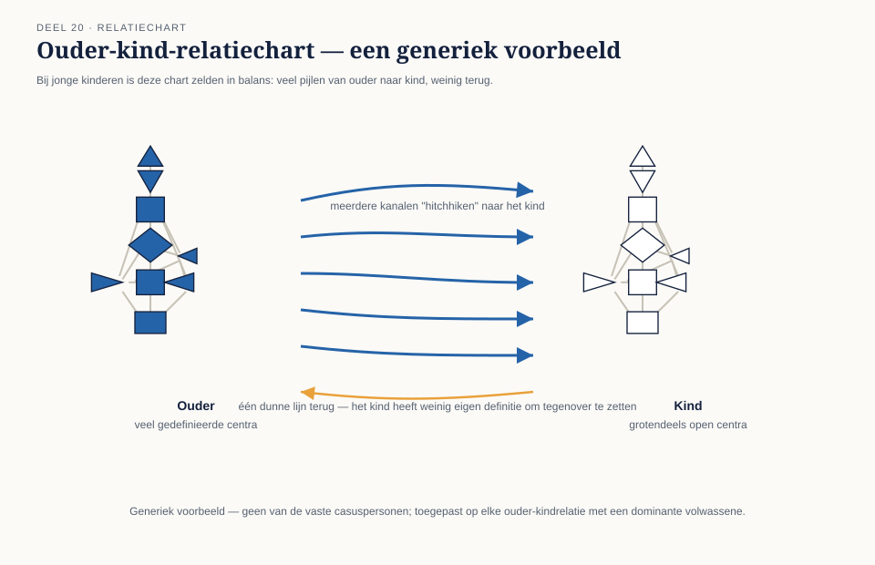

Van alle toepassingen van dit systeem ligt de opvoedingscontext het gevoeligst: een kind kan zich, anders dan een volwassen cliënt, nog niet kritisch verhouden tot wat een volwassene over hem zegt. Dit deel behandelt hoe conditionering (deel 6) zich toespitst op ouder-kindrelaties, wat dat betekent voor de omgang met een kind, en — minstens zo belangrijk — waar de harde grenzen liggen.
7secties
±2udagdeel + huiswerk
3redenen voor kwetsbaarheid
3harde grenzen
Positionering. Dit systeem wordt bij kinderen nooit determinerend, nooit als vroegtijdig etiket en nooit isolerend van andere volwassenen gebruikt. Wat wetenschappelijk al vaststaat over responsief, op het kind afgestemd ouderschap, komt uit de ontwikkelingspsychologie — niet uit dit systeem.
Conditionering (deel 6) werkt via open centra: energie en meningen van gedefinieerde mensen in de omgeving worden opgenomen, versterkt en soms verward met iets eigens. Bij een kind is dit mechanisme extra sterk om drie samenhangende redenen. Ten eerste is een kind vrijwel altijd omringd door dezelfde, vaste volwassenen (ouders, verzorgers) — er is weinig variatie om tegenover te zetten. Ten tweede ontbreekt het kind nog aan het vergelijkingsmateriaal om te onderscheiden wat van hemzelf is en wat overgenomen — een vaardigheid die zelfs volwassenen in deze cursus moesten oefenen (deel 6, 7). Ten derde is de ouder-kind-relatiechart (deel 14, toegepast) bij jonge kinderen zelden in balans: een volwassene heeft doorgaans meer gedefinieerde centra en, belangrijker, een lang ingesleten gewoonte om die definitie als vanzelfsprekend te presenteren — vanuit het kind gezien overweldigende, voortdurende dominantie (deel 14) op vrijwel elk vlak.

Figuur 20-1 — een ouder-kind-relatiechart met veel pijlen van ouder naar kind, weinig terug
Controlevraag
Uit Werkboek deel 20, Opdracht 20.1
1Noem de drie redenen waarom kinderen extra kwetsbaar zijn voor conditionering.Toon antwoord
(1) Een kind is vrijwel altijd omringd door dezelfde, vaste volwassenen — weinig variatie om tegenover te zetten. (2) Een kind mist nog het vergelijkingsmateriaal om eigen van overgenomen te onderscheiden. (3) De ouder-kind-relatiechart is bij jonge kinderen zelden in balans: de volwassene domineert vrijwel elk vlak, overweldigend gezien vanuit het kind.
02
Wat de leer voorstelt: ruimte voor de eigen strategie
⏱ 18 min
De centrale canonieke aanbeveling voor opvoeding is niet ingewikkelder dan: laat een kind, voor zover mogelijk, zijn eigen strategie ontdekken (deel 3) in plaats van voortdurend te sturen vanuit de strategie of het gezag van de ouder. Praktisch, per type:
Generator/MG-kind: laat het kind zoveel mogelijk reageren op wat het leven aanbiedt, in plaats van voortdurend te initiëren namens het kind ("we gaan nu dit doen"). Stel gesloten vragen ("wil je dit?") in plaats van open aankondigingen, en laat merken dat een "nee" een net zo geldig antwoord is als een "ja".
Projector-kind: nodig uit in plaats van te pushen. Een Projector-kind dat voortdurend ongevraagd moet meedoen in het tempo van sacrale gezinsleden, loopt canoniek een verhoogd risico op vroege uitputting; vraag vaker of het kind ergens bij wil zijn, in plaats van dat als vanzelfsprekend aan te nemen.
Manifestor-kind: leer informeren in plaats van alleen gehoorzamen. Een Manifestor-kind dat nooit heeft mogen ervaren wat er gebeurt als het zijn eigen plannen aankondigt (in plaats van alleen instructies volgt), kan canoniek later meer moeite hebben met de informeer-strategie als volwassene.
Reflector-kind: bied vooral een gezonde, stabiele omgeving en wissel niet te vaak van locatie of gezelschap zonder aanleiding. Een Reflector-kind weerspiegelt de gezinssfeer sterker dan andere kinderen (deel 6) — spanningen in het gezin zijn bij dit kind het eerst en het scherpst zichtbaar, niet omdat het "gevoeliger" is in kwaliteit, maar omdat het mechanisme dat zo werkt.
Controlevraag
Uit Werkboek deel 20, Opdracht 20.2
1Geef voor elk van de vier typegroepen het opvoedingsprincipe in één zin.Toon antwoord
Generator/MG: laten reageren in plaats van namens het kind initiëren. Projector: uitnodigen in plaats van pushen. Manifestor: leren informeren in plaats van alleen gehoorzamen. Reflector: een gezonde, stabiele omgeving bieden zonder onnodig te wisselen van locatie of gezelschap.
03
Autoriteit bij kinderen: nog in ontwikkeling
⏱ 12 min
De canon erkent dat jonge kinderen hun eigen autoriteit (deel 4) nog niet bewust kunnen toepassen — een driejarige met sacrale autoriteit kan zijn lijfelijke respons nog niet in woorden vatten, laat staan er zelfstandig naar handelen tegenover een aandringende volwassene. De praktische consequentie: ouderlijk gezag blijft nodig, vooral in de vroege jaren, maar de canon pleit ervoor de eigen autoriteit van het kind steeds serieuzer te nemen naarmate het ouder wordt — te beginnen met simpelweg de tijd nemen om te merken hoe een kind zelf reageert, in plaats van voortdurend voor het kind te beslissen "voor zijn eigen bestwil".
04
Mini-casus: Vera en Tobias
⏱ 16 min
Vera (Generator, sacrale autoriteit) heeft een zoon, Tobias (7 jaar, Projector). Vera plant het gezinsleven van nature vol activiteiten — zwemles, familiebezoek, speelafspraken — omdat dat bij haar eigen sacrale energie past en goed voelt. Tobias raakt na zulke weken zichtbaar uitgeput en teruggetrokken, wat Vera aanvankelijk las als verlegenheid of een probleem dat "opgelost" moest worden met nóg meer sociale blootstelling.
Na kennismaking met dit systeem herkent Vera het patroon: haar eigen tempo (Generator) verschilt structureel van wat Tobias (Projector) nodig heeft — uitnodiging in plaats van planning, rust als onderdeel van het ritme in plaats van uitzondering. Het experiment dat ze uitprobeert: Tobias vooraf vragen of hij bij een activiteit wil zijn, in plaats van hem aan te melden en te verwachten dat hij meegaat. Belangrijk om te benoemen: dit is Vera's eigen experiment op haar eigen gezinsleven (deel 7) — geen vaststaande diagnose van Tobias, en geen garantie dat het zo werkt.
Controlevraag
Uit Werkboek deel 20, Opdracht 20.3
1Wat zou er mis kunnen gaan als Vera het patroon uit haar experiment te rigide toepast?Toon antwoord
Als Vera het te rigide toepast — bijvoorbeeld Tobias structureel nergens meer bij betrekken "omdat hij toch een Projector is" — verschuift een eigen, voorzichtig experiment naar een determinerend etiket, precies de harde grens uit paragraaf 5. Het risico is dat Tobias niet meer wordt uitgenodigd, maar bij voorbaat wordt buitengesloten op basis van een typering in plaats van op wat hij op dat moment werkelijk wil.
05
De harde grens: geen label in plaats van een kind
⏱ 18 min
Dit is de belangrijkste boodschap van het hele deel. Een kind is geen "Projector" of "Manifestor" — het is een kind met een kaart die, net als bij elke volwassene, hooguit een mogelijkheid ter toetsing biedt (deel 1). Drie concrete grenzen:
Nooit determinerend gebruiken. "Hij is nu eenmaal een Manifestor, daarom luistert hij niet" is een omgekeerde diagnose (deel 3) én een manier om verantwoordelijkheid voor opvoeding af te schuiven op een onbewezen systeem.
Nooit als etiket richting het kind zelf, zeker niet vóór het kind oud genoeg is om zelf te kunnen toetsen en tegenspreken. Een kind dat opgroeit met "jij bent een Reflector, dus jij weet nooit wat je wilt" krijgt een zelfbeeld opgelegd, precies het patroon dat deze hele cursus als grondfout heeft afgewezen.
Nooit gebruiken om een kind te isoleren van andere volwassenen of om het kind afhankelijk te maken van één specifieke duiding of duider. Elke praktijk die een kind losmaakt van andere vertrouwde volwassenen of het gevoel geeft dat het systeem — of de persoon die het uitlegt — de enige is die het kind "echt begrijpt", is een ernstige grensoverschrijding, geen opvoedkundig hulpmiddel.
Controlevraag
Uit Werkboek deel 20, Opdracht 20.4
1"Ik heb gemerkt dat mijn dochter opknapt van wat rust na een drukke dag — ik plan nu bewust wat meer ruimte in." Overtreedt dit een harde grens?Toon antwoord
Nee. Dit is een eigen, toetsbare observatie die tot een aanpassing leidt — geen determinerend etiket, geen isolatie.
2"Mijn zoon is een Manifestor, dus hij luistert gewoon niet — dat zit in zijn systeem." Overtreedt dit een harde grens?Toon antwoord
Ja. Dit is een determinerend gebruik: het schuift verantwoordelijkheid voor gedrag af op een onbewezen systeem, in plaats van het als mogelijkheid ter toetsing te gebruiken.
3"Ik vertel mijn kinderen niet over hun type; ik gebruik het zelf als denkkader om anders naar hun gedrag te kijken." Overtreedt dit een harde grens?Toon antwoord
Nee. Het type wordt hier niet als etiket naar het kind gebracht en niet gebruikt om het kind te isoleren — het blijft een intern denkkader van de ouder.
4"Ik heb mijn kind verteld dat hij een Reflector is en dat alleen ik hem daarom echt begrijp." Overtreedt dit een harde grens?Toon antwoord
Ja, zwaar. Dit is zowel een vroegtijdig etiket richting het kind zelf als de isolatiegrens: het kind wordt afhankelijk gemaakt van één specifieke duider die zich als enige "echte begrijper" presenteert.
06
Eerlijke kanttekening: wat ontwikkelingspsychologie al weet
⏱ 14 min
Het advies om een kind ruimte te geven voor het eigen tempo en de eigen aard, in plaats van voortdurend het ouderlijke ritme op te leggen, is geen Human-Design-vinding: gehechtheidstheorie, temperamentonderzoek en de bredere ontwikkelingspsychologie erkennen al decennia dat kinderen verschillen in reactiviteit, sociale behoefte en zelfregulatie, en dat responsief, op het kind afgestemd ouderschap goede uitkomsten voorspelt. Wat dit systeem specifiek toevoegt — dat dit temperament exact af te lezen zou zijn uit een geboortemoment — is onbewezen. De waarde zit in de aanmoediging zelf: een vast vocabulaire dat ouders helpt om moment voor moment te kijken naar wát dit specifieke kind nu nodig heeft, in plaats van automatisch aan te nemen dat het net zo werkt als de ouder zelf.
Controlevraag
Uit Werkboek deel 20, Opdracht 20.5
1Is er iets aan de opvoedingsprincipes uit paragraaf 2 dat écht specifiek aan dit systeem hangt?Toon antwoord
Niet in de kern: de aanbeveling om een kind ruimte te geven voor zijn eigen tempo en aard, in plaats van het ouderlijke ritme op te leggen, is ook zonder Human-Design-taal aan te raden op basis van gehechtheidstheorie en temperamentonderzoek. Specifiek aan dit systeem is uitsluitend de claim dát temperament exact af te lezen zou zijn uit een geboortemoment — en die claim is onbewezen.
07
Samenvatting
⏱ 8 min
Kinderen zijn extra kwetsbaar voor conditionering: vaste omgeving, geen vergelijkingsmateriaal, en een ouder-kind-relatiechart die zelden in balans is. De canon pleit voor opvoeding die ruimte geeft aan de eigen, nog ontluikende strategie van het kind — per type concreet ingevuld — en erkent dat autoriteit bij jonge kinderen nog in ontwikkeling is. Vera en Tobias illustreren hoe een ouder het eigen tempo kan onderscheiden van dat van het kind, als eigen experiment. De harde grens: nooit determinerend gebruiken, nooit als vroegtijdig etiket, nooit om een kind te isoleren van andere volwassenen. Wat werkelijk bewezen werkt — responsief, op het kind afgestemd ouderschap — bestond al in de ontwikkelingspsychologie; dit systeem biedt er hooguit een vocabulaire voor.
Begrip
Omschrijving
Ouder-kind-relatiechart
Toepassing van deel 14 op een gezinsrelatie; vaak sterk eenzijdige dominantie
Ontluikende autoriteit
Canonieke erkenning dat een kind zijn eigen autoriteit nog niet bewust kan toepassen
Determinerend gebruik (verboden)
Een kaart-etiket gebruiken als verklaring/excuus voor gedrag van een kind
Isolatiegrens (verboden)
Het systeem of de duider gebruiken om een kind los te maken van andere vertrouwde volwassenen
Verder naar deel 21
Deel 21 behandelt teams en zakelijke toepassing: hoe je naar meerdere kaarten tegelijk kijkt in een werkcontext. Denk vast aan een team waarin je hebt gewerkt en dat opvallend goed of opvallend slecht functioneerde.